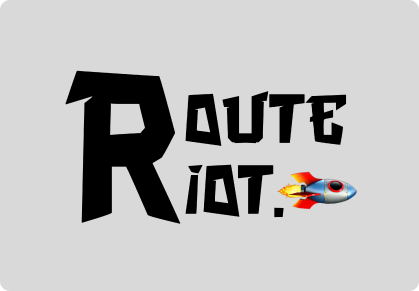

Introducing
'Heulaulastudios'
Embracing design's wild side.
Currently a Product Designer at Heulaulastudios , recognized for 'Route Riot and 'Sympathy for Dandelion.' Graduating soon, I embrace the unconventional in design.
Descend into Chaos: Explore My Journey
Unleash
'Pesta Hari Akhir'
Where design knows no bounds.
My journey as a product designer is a quest to challenge the status quo. I thrive on pushing boundaries, breaking rules, and creating designs that defy expectations. While others seek purpose, I embrace the void and let it inspire my creations.
I am not your typical
product designer.
I am a
lifelong learner.

UI / UX Designer @ Heulaulastudios
üï∫üèª FULL CASE STUDY!
Check out Heulaulastudios' website study case - a showcase of our innovative approach to brand identity, art direction, and graphic design, highlighting our commitment to creative and functional web solutions. üî™üíô

Product Designer @ Sympathy for Dandelion
üöß UNDER CONSTRUCTION
Sympathy For Dandelion is a clothing brand, or should I say, a brand of comfy, stylish, and environmentally conscious clothing. Sympathy For Dandelion creates cool clothes with a noble heart, like planting three trees for each product. üå±üíÉ
UI / UX Designer @ Route Riot Apps
Route Riot , your passport to adventure! Whether it's an impromptu road trip or a meticulously planned journey, our app ensures you navigate like a pro. üöóüåç
Product Designer @ Paudqu Al-Ridho
üï∫üèª FULL CASE STUDY!
PAUDQu AR-Ridho provides early Islamic education for young children, addressing the community's need for early religious instruction due to concerns about children's understanding of Islam and the shortage of such institutions. üë´üèªüéì
If you have been provided the password to my NDA-protected work, read my Sympathy for Dandelion case study here →